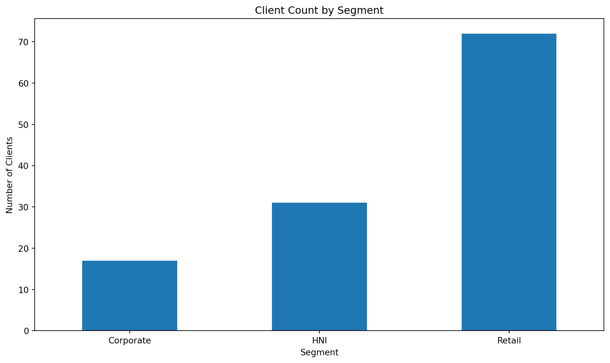
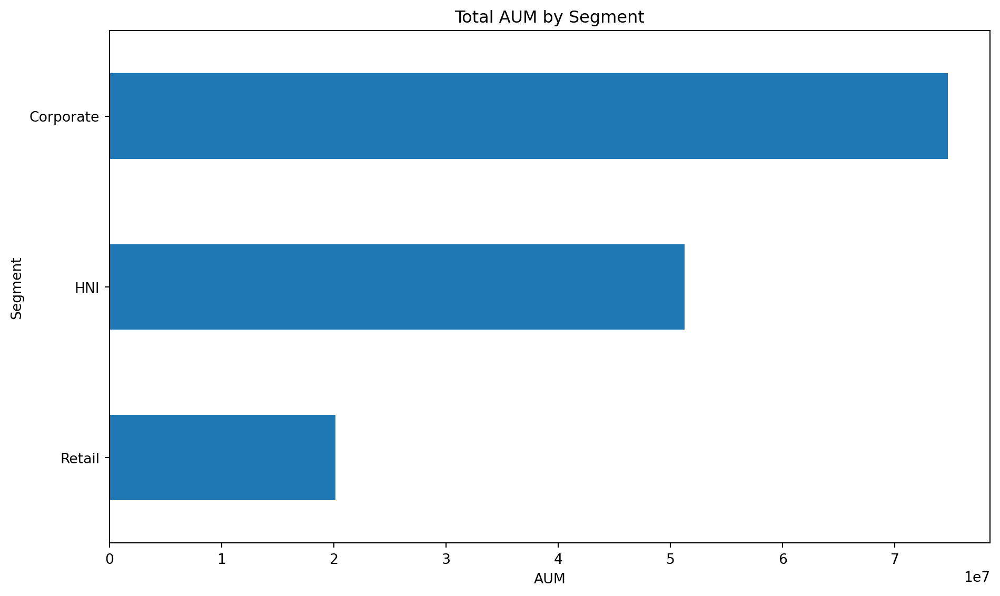
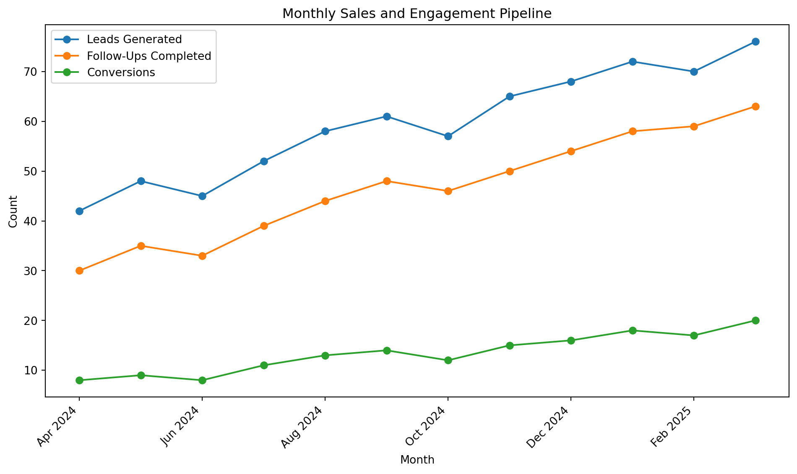
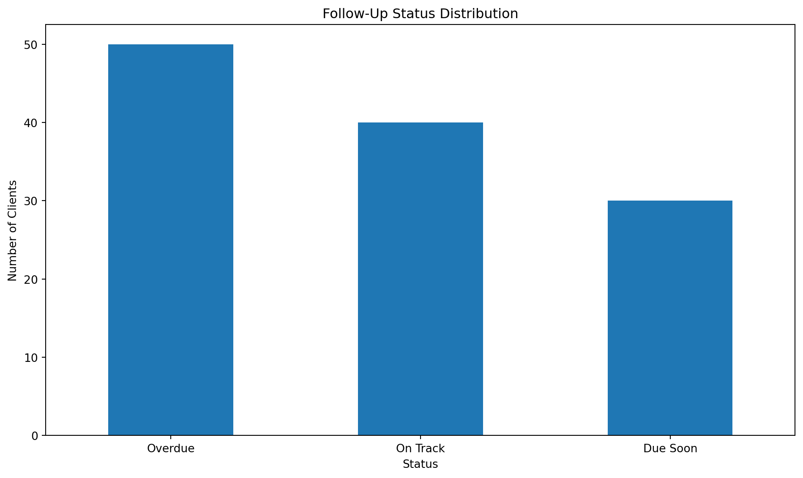

Code
import numpy as np
import pandas as pd
import matplotlib.pyplot as plt
plt.rcParams["figure.figsize"] = (10, 6)
pd.set_option("display.float_format", lambda x: f"{x:,.2f}")
np.random.seed(38)Abel G N
March 25, 2025
This project presents a business intelligence style dashboard for client portfolio monitoring, lead follow-ups, and engagement tracking. It is inspired by workflow areas such as client support, portfolio monitoring, and follow-up activity, but it uses synthetic data for confidentiality and portfolio safety.
The client dataset in this project is synthetically generated. It does not represent real clients, real account values, or real company records. The purpose is to demonstrate analytical thinking, reporting structure, and Python-based dashboard development.1
This dashboard project aims to:
n_clients = 120
client_ids = [f"C{str(i).zfill(3)}" for i in range(1, n_clients + 1)]
segments = np.random.choice(["Retail", "HNI", "Corporate"], size=n_clients, p=[0.60, 0.25, 0.15])
risk_profile = np.random.choice(["Low", "Moderate", "High"], size=n_clients, p=[0.35, 0.45, 0.20])
region = np.random.choice(["South", "West", "North", "East"], size=n_clients, p=[0.35, 0.25, 0.20, 0.20])
product_type = np.random.choice(
["Equity", "Mutual Fund", "Fixed Income", "Hybrid Portfolio"],
size=n_clients,
p=[0.30, 0.30, 0.20, 0.20]
)
aum = []
for segment in segments:
if segment == "Retail":
aum.append(np.random.randint(80_000, 500_000))
elif segment == "HNI":
aum.append(np.random.randint(600_000, 2_500_000))
else:
aum.append(np.random.randint(2_000_000, 8_000_000))
monthly_revenue = [round(value * np.random.uniform(0.004, 0.012), 2) for value in aum]
satisfaction = np.round(np.random.uniform(3.2, 4.9, n_clients), 2)
today = pd.Timestamp("2025-03-31")
days_since_contact = np.random.randint(3, 95, n_clients)
last_contact_date = today - pd.to_timedelta(days_since_contact, unit="D")
next_review_date = last_contact_date + pd.to_timedelta(np.random.randint(20, 75, n_clients), unit="D")
client_df = pd.DataFrame({
"Client ID": client_ids,
"Segment": segments,
"Risk Profile": risk_profile,
"Region": region,
"Product Type": product_type,
"AUM": aum,
"Estimated Monthly Revenue": monthly_revenue,
"Satisfaction Score": satisfaction,
"Days Since Contact": days_since_contact,
"Last Contact Date": last_contact_date,
"Next Review Date": next_review_date
})
client_df["Follow-Up Status"] = np.where(
client_df["Days Since Contact"] > 60, "Overdue",
np.where(client_df["Days Since Contact"] > 30, "Due Soon", "On Track")
)
client_df.head(10)| Client ID | Segment | Risk Profile | Region | Product Type | AUM | Estimated Monthly Revenue | Satisfaction Score | Days Since Contact | Last Contact Date | Next Review Date | Follow-Up Status | |
|---|---|---|---|---|---|---|---|---|---|---|---|---|
| 0 | C001 | Retail | High | East | Mutual Fund | 144454 | 1,526.14 | 3.52 | 24 | 2025-03-07 | 2025-04-25 | On Track |
| 1 | C002 | Corporate | Moderate | North | Equity | 2936344 | 34,832.52 | 3.28 | 83 | 2025-01-07 | 2025-03-15 | Overdue |
| 2 | C003 | Corporate | Moderate | East | Equity | 4181340 | 17,062.50 | 4.72 | 82 | 2025-01-08 | 2025-02-23 | Overdue |
| 3 | C004 | HNI | Moderate | North | Fixed Income | 1395071 | 13,920.67 | 4.62 | 70 | 2025-01-20 | 2025-03-10 | Overdue |
| 4 | C005 | HNI | Moderate | North | Fixed Income | 1845342 | 12,169.99 | 3.99 | 32 | 2025-02-27 | 2025-05-07 | Due Soon |
| 5 | C006 | HNI | High | South | Fixed Income | 1448817 | 14,381.74 | 3.90 | 94 | 2024-12-27 | 2025-03-04 | Overdue |
| 6 | C007 | Retail | Moderate | South | Mutual Fund | 201312 | 1,522.52 | 4.52 | 89 | 2025-01-01 | 2025-02-10 | Overdue |
| 7 | C008 | Retail | Low | South | Equity | 320026 | 1,313.47 | 3.75 | 25 | 2025-03-06 | 2025-04-30 | On Track |
| 8 | C009 | Retail | Moderate | South | Mutual Fund | 98667 | 527.60 | 3.70 | 15 | 2025-03-16 | 2025-05-07 | On Track |
| 9 | C010 | Retail | Moderate | East | Mutual Fund | 397679 | 3,827.59 | 4.67 | 15 | 2025-03-16 | 2025-05-06 | On Track |
total_clients = len(client_df)
total_aum = client_df["AUM"].sum()
avg_satisfaction = client_df["Satisfaction Score"].mean()
overdue_rate = (client_df["Follow-Up Status"].eq("Overdue").mean() * 100)
kpi_df = pd.DataFrame({
"KPI": [
"Total Clients",
"Total AUM",
"Average Satisfaction Score",
"Overdue Follow-Up Rate (%)"
],
"Value": [
total_clients,
round(total_aum, 2),
round(avg_satisfaction, 2),
round(overdue_rate, 2)
]
})
kpi_df| KPI | Value | |
|---|---|---|
| 0 | Total Clients | 120.00 |
| 1 | Total AUM | 146,160,468.00 |
| 2 | Average Satisfaction Score | 4.06 |
| 3 | Overdue Follow-Up Rate (%) | 41.67 |
| Segment | Clients | Total_AUM | Avg_Satisfaction | |
|---|---|---|---|---|
| 0 | Corporate | 17 | 74736408 | 4.13 |
| 1 | HNI | 31 | 51262717 | 4.04 |
| 2 | Retail | 72 | 20161343 | 4.06 |
months = pd.date_range("2024-04-01", periods=12, freq="MS")
pipeline_df = pd.DataFrame({
"Month": months.strftime("%b %Y"),
"Leads Generated": [42, 48, 45, 52, 58, 61, 57, 65, 68, 72, 70, 76],
"Follow-Ups Completed": [30, 35, 33, 39, 44, 48, 46, 50, 54, 58, 59, 63],
"Conversions": [8, 9, 8, 11, 13, 14, 12, 15, 16, 18, 17, 20]
})
pipeline_df| Month | Leads Generated | Follow-Ups Completed | Conversions | |
|---|---|---|---|---|
| 0 | Apr 2024 | 42 | 30 | 8 |
| 1 | May 2024 | 48 | 35 | 9 |
| 2 | Jun 2024 | 45 | 33 | 8 |
| 3 | Jul 2024 | 52 | 39 | 11 |
| 4 | Aug 2024 | 58 | 44 | 13 |
| 5 | Sep 2024 | 61 | 48 | 14 |
| 6 | Oct 2024 | 57 | 46 | 12 |
| 7 | Nov 2024 | 65 | 50 | 15 |
| 8 | Dec 2024 | 68 | 54 | 16 |
| 9 | Jan 2025 | 72 | 58 | 18 |
| 10 | Feb 2025 | 70 | 59 | 17 |
| 11 | Mar 2025 | 76 | 63 | 20 |
client_df["Priority Score"] = (
client_df["Days Since Contact"] * 0.5
+ (5 - client_df["Satisfaction Score"]) * 20
+ (client_df["AUM"] / client_df["AUM"].max()) * 25
)
priority_clients = client_df.sort_values("Priority Score", ascending=False)[[
"Client ID",
"Segment",
"Region",
"AUM",
"Satisfaction Score",
"Days Since Contact",
"Follow-Up Status",
"Priority Score"
]].head(10)
priority_clients["Priority Score"] = priority_clients["Priority Score"].round(2)
priority_clients| Client ID | Segment | Region | AUM | Satisfaction Score | Days Since Contact | Follow-Up Status | Priority Score | |
|---|---|---|---|---|---|---|---|---|
| 1 | C002 | Corporate | North | 2936344 | 3.28 | 83 | Overdue | 86.12 |
| 74 | C075 | Retail | West | 419510 | 3.22 | 91 | Overdue | 82.56 |
| 37 | C038 | HNI | West | 1920683 | 3.39 | 87 | Overdue | 82.39 |
| 5 | C006 | HNI | South | 1448817 | 3.90 | 94 | Overdue | 74.04 |
| 20 | C021 | Corporate | South | 3898124 | 3.83 | 71 | Overdue | 72.47 |
| 109 | C110 | Corporate | South | 6278890 | 4.72 | 87 | Overdue | 70.95 |
| 115 | C116 | Corporate | North | 2303848 | 3.48 | 65 | Overdue | 70.92 |
| 49 | C050 | Retail | South | 376280 | 3.56 | 80 | Overdue | 70.11 |
| 25 | C026 | Corporate | South | 3643639 | 4.36 | 89 | Overdue | 69.98 |
| 56 | C057 | Retail | East | 186390 | 3.44 | 76 | Overdue | 69.85 |




This project shows how a simple analytics dashboard can support:
This project reflects how data can be organized into a practical decision-support tool. Even with synthetic data, the dashboard demonstrates how analytics can improve visibility into portfolio activity, follow-up quality, and client engagement outcomes.
Synthetic data is used to protect confidentiality while still demonstrating the reporting and dashboard workflow clearly.↩︎
---
title: "Client Portfolio and Sales Insights Dashboard"
description: "A portfolio-style analytics project using synthetic client data to track portfolio value, sales follow-ups, engagement, and review priorities through executable Python code."
author: "Abel G N"
date: "2025-03-25"
image: ../../images/project-dashboard.jpg
categories:
- Data Analytics
- Business Intelligence
- Dashboard
- Python
page-layout: article
toc: true
format:
html:
code-tools: true
code-fold: show
---
## Project overview
This project presents a **business intelligence style dashboard** for client portfolio monitoring, lead follow-ups, and engagement tracking. It is inspired by workflow areas such as client support, portfolio monitoring, and follow-up activity, but it uses **synthetic data** for confidentiality and portfolio safety.
::: {.callout-note}
## Data note
The client dataset in this project is **synthetically generated**. It does not represent real clients, real account values, or real company records. The purpose is to demonstrate analytical thinking, reporting structure, and Python-based dashboard development.[^dashboard]
:::
## Objectives
This dashboard project aims to:
- summarize key portfolio and follow-up metrics
- analyze client segmentation
- track lead and conversion trends over time
- identify accounts that need priority follow-up
- present insights in a clear and professional format
## Python setup
```{python}
#| label: dashboard-setup
#| message: false
#| warning: false
import numpy as np
import pandas as pd
import matplotlib.pyplot as plt
plt.rcParams["figure.figsize"] = (10, 6)
pd.set_option("display.float_format", lambda x: f"{x:,.2f}")
np.random.seed(38)
```
## Create a synthetic client portfolio dataset
```{python}
#| label: create-client-data
#| echo: true
n_clients = 120
client_ids = [f"C{str(i).zfill(3)}" for i in range(1, n_clients + 1)]
segments = np.random.choice(["Retail", "HNI", "Corporate"], size=n_clients, p=[0.60, 0.25, 0.15])
risk_profile = np.random.choice(["Low", "Moderate", "High"], size=n_clients, p=[0.35, 0.45, 0.20])
region = np.random.choice(["South", "West", "North", "East"], size=n_clients, p=[0.35, 0.25, 0.20, 0.20])
product_type = np.random.choice(
["Equity", "Mutual Fund", "Fixed Income", "Hybrid Portfolio"],
size=n_clients,
p=[0.30, 0.30, 0.20, 0.20]
)
aum = []
for segment in segments:
if segment == "Retail":
aum.append(np.random.randint(80_000, 500_000))
elif segment == "HNI":
aum.append(np.random.randint(600_000, 2_500_000))
else:
aum.append(np.random.randint(2_000_000, 8_000_000))
monthly_revenue = [round(value * np.random.uniform(0.004, 0.012), 2) for value in aum]
satisfaction = np.round(np.random.uniform(3.2, 4.9, n_clients), 2)
today = pd.Timestamp("2025-03-31")
days_since_contact = np.random.randint(3, 95, n_clients)
last_contact_date = today - pd.to_timedelta(days_since_contact, unit="D")
next_review_date = last_contact_date + pd.to_timedelta(np.random.randint(20, 75, n_clients), unit="D")
client_df = pd.DataFrame({
"Client ID": client_ids,
"Segment": segments,
"Risk Profile": risk_profile,
"Region": region,
"Product Type": product_type,
"AUM": aum,
"Estimated Monthly Revenue": monthly_revenue,
"Satisfaction Score": satisfaction,
"Days Since Contact": days_since_contact,
"Last Contact Date": last_contact_date,
"Next Review Date": next_review_date
})
client_df["Follow-Up Status"] = np.where(
client_df["Days Since Contact"] > 60, "Overdue",
np.where(client_df["Days Since Contact"] > 30, "Due Soon", "On Track")
)
client_df.head(10)
```
## Dashboard KPIs
```{python}
#| label: dashboard-kpis
#| echo: true
total_clients = len(client_df)
total_aum = client_df["AUM"].sum()
avg_satisfaction = client_df["Satisfaction Score"].mean()
overdue_rate = (client_df["Follow-Up Status"].eq("Overdue").mean() * 100)
kpi_df = pd.DataFrame({
"KPI": [
"Total Clients",
"Total AUM",
"Average Satisfaction Score",
"Overdue Follow-Up Rate (%)"
],
"Value": [
total_clients,
round(total_aum, 2),
round(avg_satisfaction, 2),
round(overdue_rate, 2)
]
})
kpi_df
```
## Client mix by segment
```{python}
#| label: segment-summary
#| echo: true
segment_summary = client_df.groupby("Segment").agg(
Clients=("Client ID", "count"),
Total_AUM=("AUM", "sum"),
Avg_Satisfaction=("Satisfaction Score", "mean")
).reset_index()
segment_summary["Avg_Satisfaction"] = segment_summary["Avg_Satisfaction"].round(2)
segment_summary
```
## Follow-up status summary
```{python}
#| label: followup-summary
#| echo: true
followup_summary = client_df["Follow-Up Status"].value_counts().rename_axis("Status").reset_index(name="Clients")
followup_summary
```
## Monthly sales and engagement pipeline
```{python}
#| label: monthly-pipeline-data
#| echo: true
months = pd.date_range("2024-04-01", periods=12, freq="MS")
pipeline_df = pd.DataFrame({
"Month": months.strftime("%b %Y"),
"Leads Generated": [42, 48, 45, 52, 58, 61, 57, 65, 68, 72, 70, 76],
"Follow-Ups Completed": [30, 35, 33, 39, 44, 48, 46, 50, 54, 58, 59, 63],
"Conversions": [8, 9, 8, 11, 13, 14, 12, 15, 16, 18, 17, 20]
})
pipeline_df
```
## Priority review list
```{python}
#| label: priority-review-list
#| echo: true
client_df["Priority Score"] = (
client_df["Days Since Contact"] * 0.5
+ (5 - client_df["Satisfaction Score"]) * 20
+ (client_df["AUM"] / client_df["AUM"].max()) * 25
)
priority_clients = client_df.sort_values("Priority Score", ascending=False)[[
"Client ID",
"Segment",
"Region",
"AUM",
"Satisfaction Score",
"Days Since Contact",
"Follow-Up Status",
"Priority Score"
]].head(10)
priority_clients["Priority Score"] = priority_clients["Priority Score"].round(2)
priority_clients
```
## Visual 1: client count by segment
```{python}
#| label: fig-client-segments
#| fig-cap: "Distribution of clients across portfolio segments."
#| echo: true
segment_counts = client_df["Segment"].value_counts().sort_index()
ax = segment_counts.plot(kind="bar")
ax.set_title("Client Count by Segment")
ax.set_xlabel("Segment")
ax.set_ylabel("Number of Clients")
plt.xticks(rotation=0)
plt.tight_layout()
plt.show()
```
## Visual 2: total AUM by segment
```{python}
#| label: fig-aum-segment
#| fig-cap: "Total assets under management by client segment."
#| echo: true
aum_by_segment = client_df.groupby("Segment")["AUM"].sum().sort_values()
ax = aum_by_segment.plot(kind="barh")
ax.set_title("Total AUM by Segment")
ax.set_xlabel("AUM")
ax.set_ylabel("Segment")
plt.tight_layout()
plt.show()
```
## Visual 3: monthly pipeline trend
```{python}
#| label: fig-monthly-pipeline
#| fig-cap: "Trend in leads, follow-ups, and conversions across 12 months."
#| echo: true
pipeline_plot = pipeline_df.set_index("Month")
ax = pipeline_plot.plot(marker="o")
ax.set_title("Monthly Sales and Engagement Pipeline")
ax.set_xlabel("Month")
ax.set_ylabel("Count")
plt.xticks(rotation=45, ha="right")
plt.tight_layout()
plt.show()
```
## Visual 4: follow-up status distribution
```{python}
#| label: fig-followup-status
#| fig-cap: "Distribution of follow-up health across the client base."
#| echo: true
status_counts = client_df["Follow-Up Status"].value_counts()
ax = status_counts.plot(kind="bar")
ax.set_title("Follow-Up Status Distribution")
ax.set_xlabel("Status")
ax.set_ylabel("Number of Clients")
plt.xticks(rotation=0)
plt.tight_layout()
plt.show()
```
## Interpretation of findings
::: {.callout-important}
## Key insights
- Retail clients form the largest share of the client base, but HNI and Corporate accounts contribute strongly to total AUM.
- A dashboard like this helps prioritize outreach by combining relationship freshness, client value, and satisfaction.
- The monthly pipeline trend suggests that follow-up activity and conversions improve when lead generation stays consistent.
- Overdue review cases can be isolated quickly through a priority score, improving relationship management and service planning.
:::
## Business value of the dashboard
This project shows how a simple analytics dashboard can support:
- relationship management
- review scheduling
- follow-up planning
- performance reporting
- decision support for portfolio and sales activity
## Skills demonstrated
- Python with pandas and numpy
- synthetic business dataset creation
- KPI reporting
- dashboard thinking
- prioritization logic
- data visualization with matplotlib
- professional communication of insights
## Conclusion
This project reflects how data can be organized into a practical decision-support tool. Even with synthetic data, the dashboard demonstrates how analytics can improve visibility into portfolio activity, follow-up quality, and client engagement outcomes.
[^dashboard]: Synthetic data is used to protect confidentiality while still demonstrating the reporting and dashboard workflow clearly.